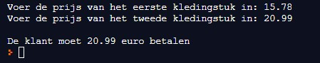

Tijdens de koopjesperiode kan je soms twee kledingstukken kopen voor de prijs van één. Je moet dan wel het duurste van de twee betalen. Het programma vraagt eerst de prijs van de twee kledingstukken. Daarna wordt getoond hoeveel de klant moet betalen. Dit is dus de prijs van het duurste kledingstuk.
Hieronder vind je de schermafdruk van een uitvoering van het programma:
